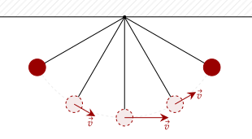
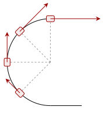
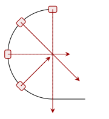
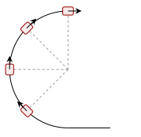
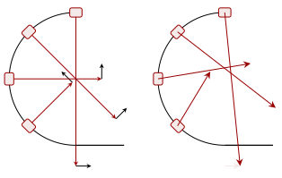
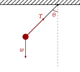
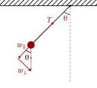
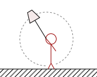

Most objects don't move at the same speed throughout a circle. For example, a pendulum moves in circular motion; however, it clearly isn't uniform. Released from rest horizontally, the bob speeds up near the bottom then comes to rest at the top again.
Clearly, this means that the speed of the object changes throughout the motion. Since it changes, that means there must be an acceleration acting on the object aside from the centripetal acceleration.

We can see in the pendulum example above what this looks like visually. The direction of velocity changes based on the centripetal acceleration; however, the magnitude of it, or the speed, also changes; it is at rest at the two highest positions but is moving fastest at the lowest position.
Since the velocity of the object is perpendicular to the circle (or tangential), we define this acceleration which changes the magnitude of the velocity of the object to be the tangential acceleration. Note that because the centripetal acceleration is based on the speed of the object, and the speed of the object changes, the magnitude of the centripetal acceleration also changes.
Question 1a
A car uniformly speeds up across a circular turn, with its velocities drawn at certain points along the curve below, the magnitude proportional to the length. For each position, what would the centripetal acceleration look like?

Answer
The centripetal acceleration points to the center, so we atleast know the direction. The magnitude we also know, so we can draw it as follows. Note that since the speed changes, the centripetal acceleration's magnitude also changes.

Question 1b
What would the tangential acceleration look like?
Answer
Given the problem states that the car "uniformly speeds up", that means that the tangential acceleration is constant throughout the motion. The direction is, as said, tangential to the circle, so it is in the same direction as the velocity.

Since we have an acceleration in the tangential and centripetal direction, we can say that the total acceleration is when we add both of these together. In the case where there is no tangential velocity, like before, the total acceleration on the object is just the centripetal acceleration.
In the case where there is some tangential acceleration, the total acceleration will stray from the centripetal acceleration.
Question 1c
Combining the answers from the past two questions, what would the total acceleration look like for each position?
Answer
We can add the two vectors graphically to achieve this diagram. Notice how the acceleration does not point directly at the center anymore; this is because the tangential acceleration "shifts" the direction of acceleration away from the center. Still, there is a centripetal component to the acceleration.

As we've noted time and time again, if there's an acceleration, there should be a force relating to it. This force must point in the direction of the acceleration, so we call this the "tangential" force. Just like the centripetal force, this force only determines the direction of the force; any force can act as the tangential force, if need be.

Given that the centripetal force has to point towards the center, it can't generate the tangential force; thus, the only other force is weight, where a component of it must make the tangential force. We break the weight into components perpendicular and parallel to the string. Since the tangential force is perpendicular to the centripetal force, the perpendicular component must be the one we are looking for.

Since the weight is parallel to the vertical, the angle is still . Thus, from trigonometry, we can get the following relation for the tangential force.
Another thing to notice is the parallel component of the weight. Clearly, this affects the centripetal force. It points away from the center, thus the tension has to be greater than it so that the centripetal force is enough. In other words, we can write out the equation for the centripetal force as follows.
One thing you may wonder is why this does not show up in the other examples we did, such as the conical pendulum. This is because the circle travelled in a conical pendulum is in a plane perpendicular to the weight; in other words, the weight does not contribute at all to the centripetal force. In the pendulum above, the weight and the circle travelled are in the same plane.
Also note that this means that, for example, the highest centripetal force occurs when is at its largest. This occurs at the bottom of the pendulum, where θ is zero.
Exercise 1a
Astra is holding a ball attached to a string in a vertical circle of radius . While she is able to rotate the ball at any angular speed she likes, the string will go slack if the speed of the object is slow enough, causing the ball to fall.

What is the minimum angular speed so that the ball will continuously go in circular motion?
Solution
To keep the water in the bucket, there has to be a centripetal force acting on the bucket and the water.
At the bottom half of the circle, the tension from the rope applies the centripetal force. At the top of the circle, however, both the tension of the rope and the component of the weight parallel to the string apply a centripetal force.
The weight of the object can't go away; however, the tension can. If, say, the tension went away, that means the string goes slack. Thus, the only force acting as the centripetal force would be the weight of the object.
At any point at the upper half then, the maximum strength of the centripetal force by the weight would determine the minimum speed possible. This occurs at the top.
Exercise 1b
Fern now spins the ball, but is now only able to spin it at a maximum angular speed of . However, his spinning is cut short as the string goes slack at some point. At what maximum angle, measured from the horizontal, going counterclockwise, will the string go slack? He rotates the ball counterclockwise.
Solution
The centripetal force for any given position on the upper half of the circle is as follows.
The point where the string goes slack is when the tension drops out.
Applying inverse cosine, we get that the angle is at 55.77°.